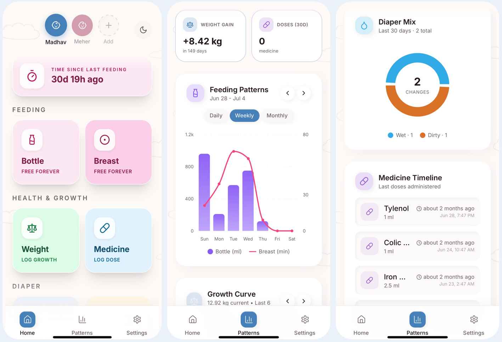
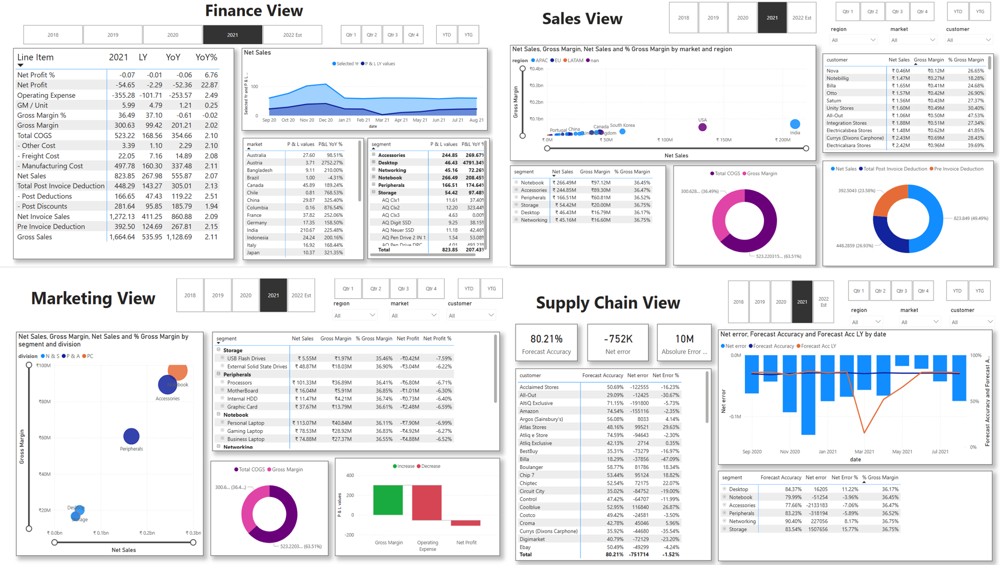
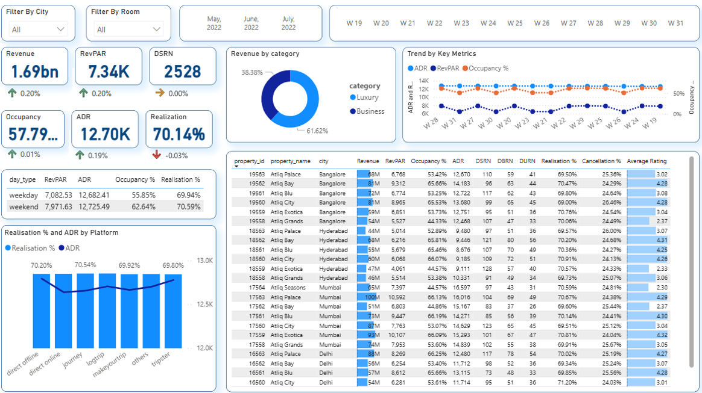
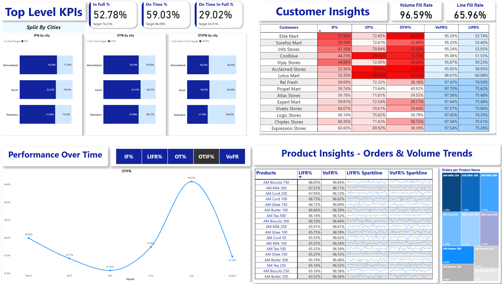
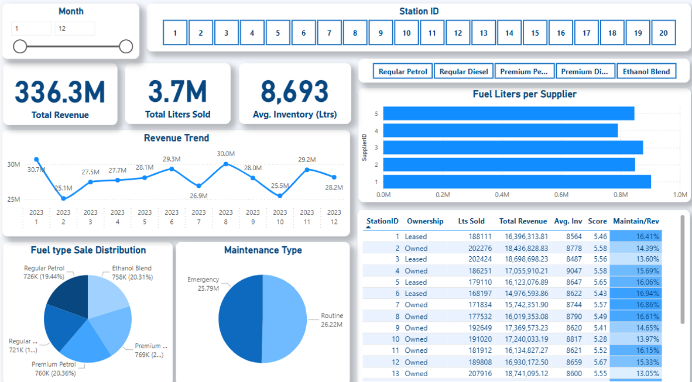
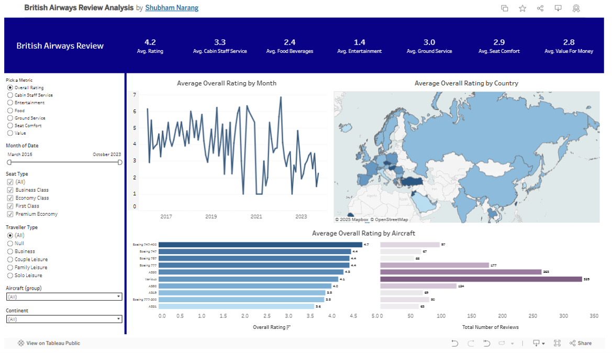
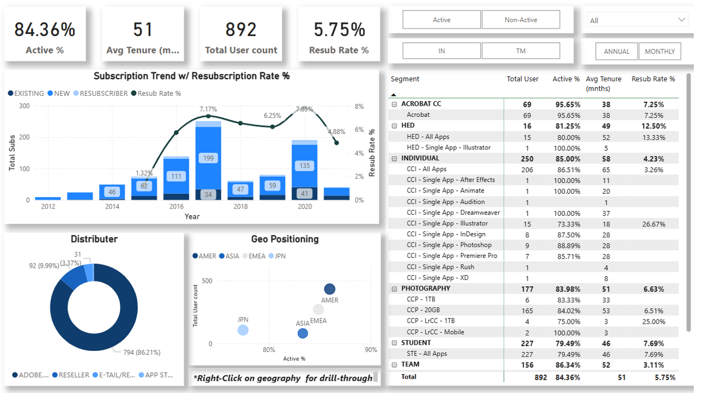

Digital Transformation Manager, Mahindra Group — Chandigarh, India
I run enterprise data and AI strategy for large organizations — standardizing how a 250+ KPI, multi-billion-rupee business sees itself, and reporting that directly to a CEO and CIO.
I build and ship my own products end to end, outside of any employer — from idea, to a real backend on Supabase, to a live domain I manage myself.
Wanted a live product I owned completely — not a work deliverable, something built, launched, and operated end to end on my own.
Built and launched on Lovable to move fast initially, then migrated the entire stack — repo, hosting, and domain — onto a self-managed GitHub → Vercel pipeline once the product needed to stand on its own outside a no-code tool.
A production product with its own domain, a Supabase backend I control, and a deployment pipeline I can extend without depending on any single platform.

Forecasting ran on Kinaxis with limited signal, and KPI reporting was fragmented across 10 separate business functions with no single source of truth for executive decisions.
Spearheading demand.ai, an ML forecasting engine that folds in TMA, Economist sentiment data, and environmental signals like rainfall and reservoir levels. In parallel, leading Project Vihan to consolidate all 10 functions onto one data platform and standardize 250+ KPIs.
86.7% forecast accuracy to date, with a monthly CEO cadence and weekly CIO cadence now built around the consolidated numbers.
Wanted to understand what was actually driving India's EV adoption curve, state by state and OEM by OEM, rather than relying on headline growth numbers.
Built a Power BI model across state and OEM-level sales and revenue data to break down growth and competitive share.
Found a 156.9% revenue CAGR and 93.9% EV sales CAGR, with Ola Electric holding a 37.5% share — and the underlying adoption drivers behind it.
Integrated finance, sales, and supply chain data; surfaced a 26.8% demand-forecast deviation and a path to improve accuracy past 65%.

₹1.69bn in revenue, 57.79% occupancy, 70.14% realization — patterns across platform, category, and season to optimize RevPAR and ADR.

Tracked in-full, on-time, and OTIF performance by city, plus fill-rate and order trends by customer and product — used to pinpoint where service levels were missing target.

Station-level view across 20 sites — revenue, liters sold, and inventory by fuel type, with a maintenance-to-revenue ratio to flag underperforming stations.

20,000+ customer reviews assessed; weak satisfaction surfaced in food (2.4) and entertainment (1.4), broken out by aircraft type and geography.

892 users analyzed — 84.36% active rate, 5.75% resubscription — used to inform retention strategy.

Supervised ML model with a Streamlit front end, predicting premiums from age, disease profile, and plan type to support personalized pricing.
Python and pandas analysis of customer, credit, and transaction data, identifying an untapped 18–25 segment to inform a new product launch.
Ran a test at 0.05 significance to validate the product decision before rollout.
Applied Celonis process mining to an eCommerce dataset to surface operational bottlenecks and recommend fixes.